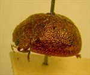
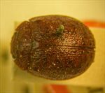
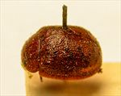
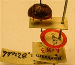
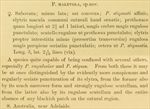

Click on images to enlarge
.jpg){kind=link}

Fig. 1. Paropsis malevola type specimen, lateral view
.jpg){kind=link}

Fig. 2. Paropsis malevola type specimen, dorsal view
.jpg){kind=link}

Fig. 3. Paropsis malevola type specimen
.jpg){kind=link}

Fig. 4. Paropsis malevola type specimen with labels
{kind=link}

Fig. 5. Paropsis malevola, description
Name
Paropsis malevola Blackburn, 1896
Corresponds to
No known correspondence with any of the species codes.
Diagnosis and Notes
Blackburn (1896) deals with P. malevola as part of his 'subgroup iii' (i.e., those species without "strongly marked characters", whose greatest height is not or scarcely in front of the middle of the elytral margin and whose elytra are not depressed under the humeral callus). Within that group, he characterises it as:
A. Elytra with a distinct postbasal impression on disc;
B. Elytral margin (viewed from the side) straight or but little sinuous;
CC. Elytral interstices not, or but very feebly, rugulose, not obscuring the punctures;
DD. Prothorax not, or but little, rugulose;
EE. Species of more convex form [than grossa or seriata]; upper outline (viewed from side) a continuous curve;
F. Prothorax closely punctulate;
GG. Prothorax without markings (size small, scarcely 3 lines [6.4 mm]).
This small species may be Ta174 or close to it, although that species typically has black humeral calli and a better-developed VR3.
Type specimen
Location: BMNH
Label data: /“Type” (red-bordered circle)/ “6183 S.A. T”/ “Blackburn coll. 1910-236.”/ “Paropsis malevola, Blackb.”/.
Female; antennae quite short, with outer segments flattening noticeably; HCE/BL ~ 21% (estimated from photo of lateral view of specimen).
Original description
Translation of original description (Figure 5) by ChatGPT, 04/2026:
♀. Somewhat ovate; rather narrower; fairly convex; allied to P. stigma(ti), with the elytra not marked with a common sutural spot; pronotum wider than long as about 2⅖ to 1, more closely and more rugulosely punctate; scutellum rugulose as the pronotum; elytra, on account of the interstices being less (especially transversely) rugulose, more distinctly punctate in rows; the rest as in P. stigma(tis). Length 3 lines [~6.4 mm]; width 2 3/10 lines (approx.) [~4.9 mm]
References
Blackburn, T. 1896, "Revision of the genus Paropsis. Part I", Proceedings of the Linnean Society of New South Wales, vol. 21, no. 4, 637-693 (page 684).
Copyright © 2026. All rights reserved.